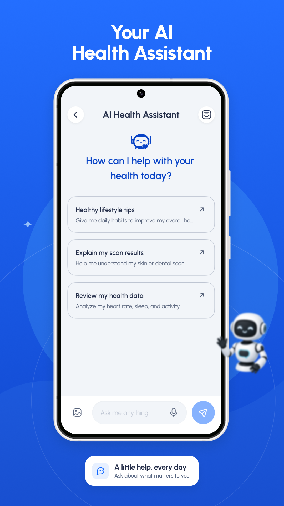
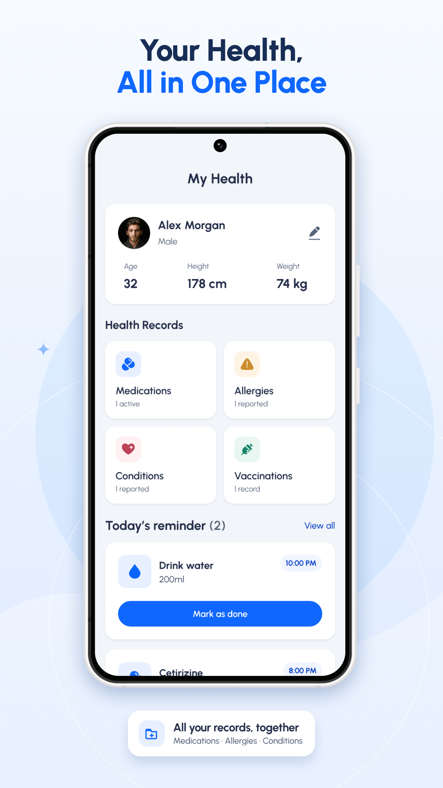
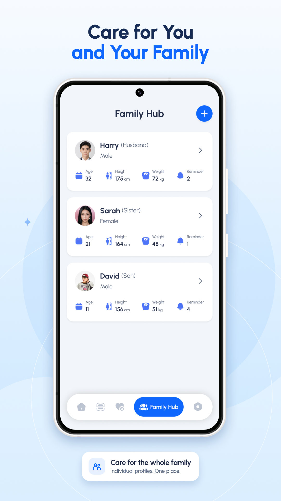

Health Care Understand Your Health Better
Health Care is an iOS app for the App Store that keeps your everyday health in one place: chat with an AI health assistant, run a Health Scan, measure your heart rate, check symptoms, keep your health records and manage reminders for the whole family.
Made for iPhone · by DatLuyen


Ask everyday health questions in a chat.
Quick checks right from the home screen.
Medications, allergies, conditions, vaccinations.
A separate profile for each family member.
Everything for your daily health, in one app
Here is what you can do with Health Care on your iPhone.
Start every day with a quick health check
The home screen greets you and puts your most-used tools one tap away, so checking in on your health takes seconds.
- Health Scan, Measure Heart Rate and Symptom Checker shortcuts
- Today's reminders with a one-tap “Mark as done”
- “Chat with AI” to open your personal health assistant

Your health, all in one place
Keep your profile and health records organized in My Health instead of scattered across notes and paper.
- Profile with age, height and weight
- Health records for medications, allergies, conditions and vaccinations
- Reminders for things like medicine and drinking water

Personalized care guidance
After an AI assessment of the symptoms you report, Health Care shows clear, easy-to-follow next steps for taking care of yourself.
- Self-care suggestions such as rest and hydration
- What to keep an eye on with Monitor Symptoms
- Turn advice into a reminder with “Set a reminder”

Care for you and your family
The Family Hub gives every family member their own profile, so you can look after the people you care about from one app.
- Add family members with the + button
- See age, height, weight and reminders for each person
- Individual profiles, one place
Your AI health assistant
Ask about what matters to you. Type or speak your question, or attach a picture, and get answers in a friendly chat.
- Healthy lifestyle tips and daily habits
- Help understanding your scan results
- A review of your heart rate, sleep and activity data
See Health Care on iPhone
Swipe through the main screens of the app.
Get started in three steps
From download to your first health check in a few minutes.
Install from the App Store
Download Health Care on your iPhone.
Set up My Health
Add your profile, health records and family members.
Check in every day
Run a quick check, follow your reminders and chat with the AI assistant.
Made for everyday health
Health Care fits people who want their health information close at hand.
Health-conscious individuals
Keep an eye on your daily well-being with quick checks and healthy-habit tips.
Families
Look after partners, children and relatives with individual profiles in the Family Hub.
People managing routines
Stay on top of medication and water reminders and keep your records organized.
Frequently asked questions
What is Health Care?
Health Care is an iPhone app on the App Store that brings an AI health assistant, quick health checks, your health records, reminders and family profiles together in one place.
Which devices does it run on?
Health Care is an iOS app made for iPhone and is distributed through the App Store.
What can I ask the AI Health Assistant?
You can ask for healthy lifestyle tips, help understanding your scan results, or a review of your heart rate, sleep and activity data. You can type, use your voice or attach a picture.
Can I manage health information for my family?
Yes. The Family Hub lets you add family members, each with their own profile showing age, height, weight and reminders.
What health records can I keep?
In My Health you can keep your profile together with medications, allergies, conditions and vaccinations, plus your daily reminders.
Does Health Care replace my doctor?
No. Health Care offers general information and self-care guidance. It is not a substitute for professional medical advice, diagnosis or treatment. Always consult a qualified health professional about medical concerns.
How is my privacy handled?
Please read our Privacy Policy for details on how information is handled.
How do I contact support?
Email us at jobertsonrule56425@gmail.com.
Get Health Care on the App Store
Understand your health better and keep everything for you and your family in one iPhone app.
Search “Health Care” by DatLuyen on the App StoreWe're here to help
Questions, feedback or support requests about Health Care:
jobertsonrule56425@gmail.com